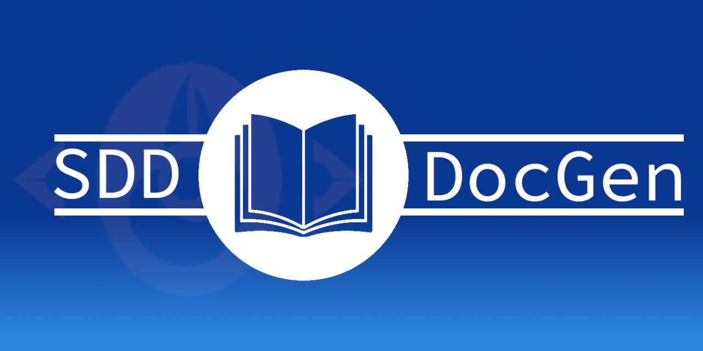

About¶
Dockerized markdown to document generator.
The value of documenting your work is not often debated. Good documentation helps you, your current teammates, and those that might join your project in the future, to have a clear idea of the things they should know. It is basically the “pay it forward” principle, but for knowledge workers.
Example generated documents can be found here: ./examples/
A detailed guide on writing good documentation can be found here: writethedocs.org
If you want to know more about writing documents in MarkDown, take a look at the GitHub Markdown Guides
Details and tech stack in the description.
Quick links: CONTRIBUTING \ CHANGELOG \ DCO \ USAGE
Releases¶
Docker Images¶
Docker images are automatically pushed to DockerHub. Check out the latest version here: DockerHub Releases
Sources and Examples¶
The sources and examples used to create and test the container Releases can be found on our [github releases page](Releases are powered by tagging specific points of history in a repository. )
Purpose¶
As software development professionals, we are often asked to write down documentation to detail what we did or how we did it. Most developers I know dislike using tools for “normal people” to achieve this goal. We prefer to write our specs and documentation close to our code (same editor, or using terminal editors).
This video is shareable set-up using open-source software, libraries, and templates to convert your Markdown files into fancy looking documents.
Repository structure¶
documents: Contains some sample documents and images
ops: Dockerfiles and scripts to run the Stack
templates: Collection of template files
examples: A set of showcase output files
Tech Stack¶
Generator
OS: Ubuntu
Doc generation stack: pandoc, LaTeX (texLive) + shell script that contains the pandoc command
Documentation content file: Markdown directory + YAML meta-data file
FOSS templates and libraries
Docker and docker-compose
Text Editors
Editor: NeoVim with some fancy plugins (unneeded, but I was playing with it recently)
Acknowledgements¶
FOSS Projects¶
Ubuntu dockerfile github
Eisvogel Pandoc template github
reveal.js github
pandoc github
TexLive website
Prosegrinder Pandoc Templates github
PlantUML website
PlantUML Server github
Drakemor’s PlantUML stylsheets github
YuzuTech’s Kroki github
Spinx Documentation Website Generator website
PyPandoc github
Contributors¶
This project follows the all-contributors specification. Contributions of any kind welcome
Change History¶
The full changelog can be found in: ./CHANGELOG.md.